千岛湖的首次接触
旅游概览
- 时间：2021年5月1日-2021年5月3日
- 人数：4（4个大老爷们，本科室友）
- 预算：人均1000左右
- 出行方式：高铁，非自驾游
出发前的准备
实际上五一前两周的时候，我们几个就语音会议了几次，罗列了一下从网上搜集到的信息，包括景点（免费或收费）、住宿、饮食等，自以为准备的挺好的，然而计划赶不上变化，到了地方才发现，有些东西跟搜集到的信息不同，又或者误判了千岛湖那边的情况，总之有不满意的地方，但总体上还是比较令人愉悦的（自我欺骗）…
这里就不一一展示我们前期调查的成果了，如果有需要的话，知乎上许多大佬都总结了千岛湖旅游攻略，这里推介一下我参考过的几篇文章。
来千岛湖旅游，如果不想失望而归，最好还是得做下前期调查，这很重要，因为景点质量层次不齐。
5月1日
我们订的是中午12点多的高铁票，从杭州东出发到富阳，中间不下车，到了千岛湖补票，全程大概就一个多小时；而从千岛湖站到我们住的地方路程还是挺远的，打了车大概半小时到一小时的路程。
啤酒小镇
抵达预订的民宿时大概就两点半，地点就离啤酒小镇几百米路程，于是就决定当天下午把物品放到房间里直接去啤酒小镇逛一逛。
门口大概是这样的，这地方建筑风格还是很明显的，能一眼认出来。
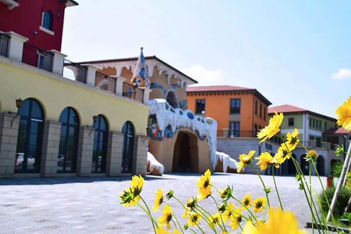
啤酒小镇这地方可以理解为一个小规模的娱乐城，速度快的话，半小时内就能逛完，但白天人很少，很多商铺–主要是餐厅都是晚上开门。
实我们来啤酒小镇主要是为了体验卡丁车，从啤酒小镇正门进去走到底就能看到卡丁车场，实际上这个卡丁车是套餐其中一个项目，包括皮划艇、热气球、蹦床、滑翔伞、卡丁车、啤酒博物馆等，整个项目的价格是300多，完整游玩需要一整天；或者也可以单独只买卡丁车的门票，价格100多，场地里玩的人好像还是挺少的，大部分人都是在卡丁车场门口围观，我感觉主要是因为这个卡丁车的入门门槛比较高，因为光买门票还不行，你得签保险、接受简单的培训等等一系列，反正我们几个立刻丧失兴趣了…
千岛湖森林氧吧
由于白天啤酒小镇这边并没有啥娱乐项目，我们立刻就闪人了，此时大概下午三点出头，看了下时间，距离千岛湖森林氧吧关门大概还剩三个小时左右，我们下一站就去了那里。
话说前期调查的时候我一直以为千岛湖森林氧吧这个地方应该是跟杭州九溪类似的一个地方，有一些人工痕迹，但大多数景观应该保持自然，然而现实狠狠抽了我的脸。
千岛湖森林氧吧的位置离市区比较远，接近湖区最东边，我们从啤酒小镇出来以后立刻就前往了，路程大概十公里以内，打车半小时以内，门票大概55元/人。
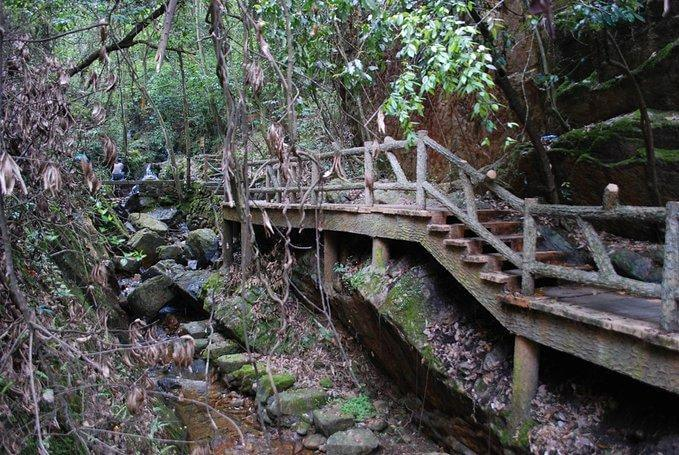
上图是我从网上找的比较接近实景的图，我印象里光线还要更暗一点，总之是个阴间景点…
如果要我用一个词概括这地方来体验啥的话，爬山……没错，所谓森林氧吧就是爬山，而且还是一座海拔不到300米的山……
顺便从网上找了一张景点路线图。
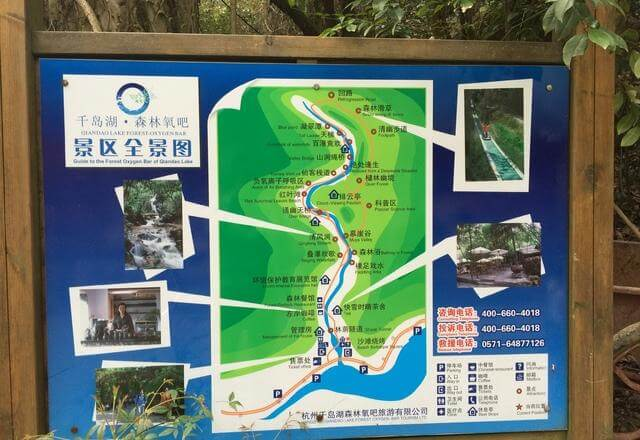
我罗列几个关键词，各位读者可以感受一下：五一人多、山路窄、昏暗、宰客，总之这个景点要多阴间有多阴间，绝对不会再去第二次。下山时，想上个厕所，结果唯一看到的那个厕所居然奇臭无比，顿时让我对这个景点的好感度下降到负值……
爬山过程中，我们4人唯一的乐趣就是打屁聊天。顺带一提，下山的时候可以看到一个滑草和滑车，都是可以快速下山的，但不幸的是，都是要钱的，依稀记得二三十元一人，极其搞笑。
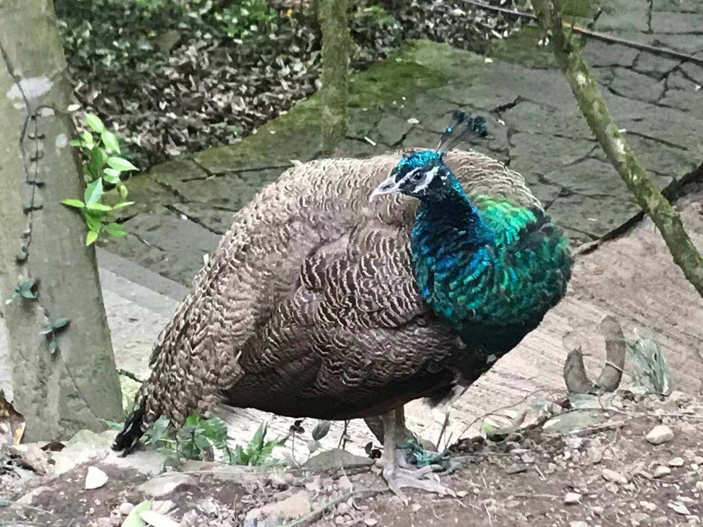
这里的孔雀和兔子是我们下山时发现的，依稀记得是一个叫“孔雀摄影”的商铺，可能是花点钱让你跟孔雀合影的吧，总之几只小动物反而是整个千岛湖氧吧为数不多的亮点。
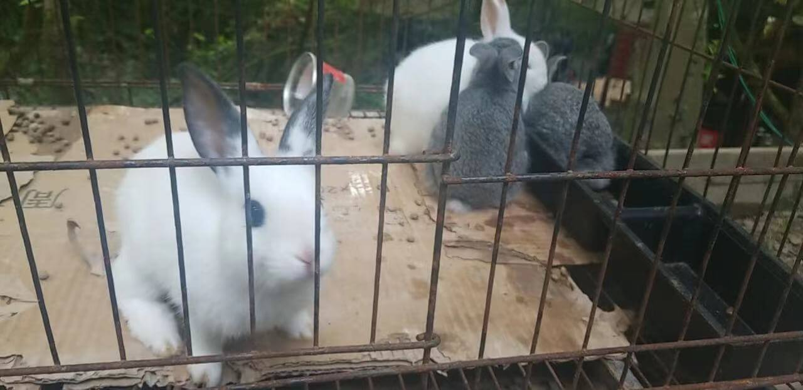
下山的时候路过一个叫“裸足戏水”的景点，我们顺便轮流拍了几张照。
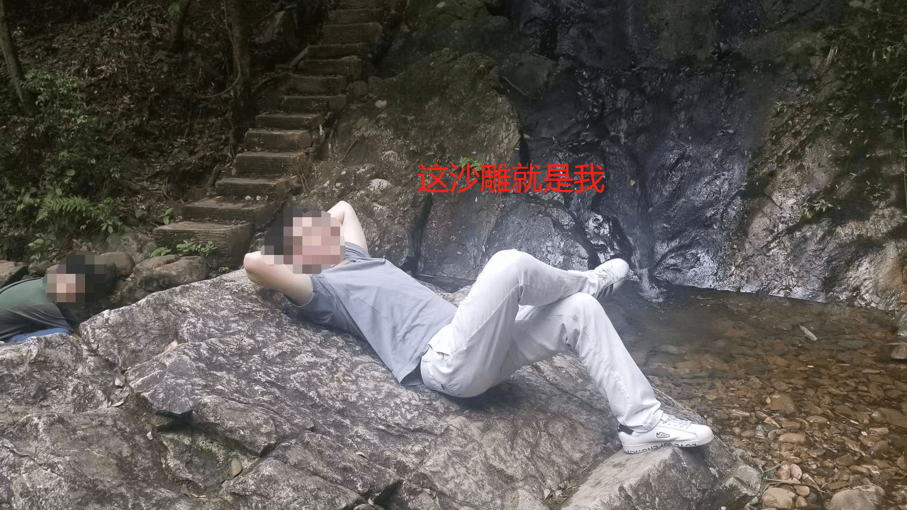
总而言之，千岛湖森林氧吧这个景点，我们一致认为是这三天逛的最不值的景点，55块钱爬了一座海拔300米不到的山。
鱼宴馆
从森林氧吧出来，大概已经下午18点多了，我们去的餐厅是前期调查的时候找到的一个餐厅，叫“鱼宴馆”，毕竟来千岛湖，肯定得专门吃一顿千岛湖鱼头吧。这家餐厅应该算是比较有人气的农家菜，打车前往餐厅前，我们已经订了座位，但由于堵车，还是迟到了，我们到的时候门口已经有好多人在排队，所幸又等了半个多小时，重新排到了我们。
首先必点的菜肯定是浓汤鱼头，先放一张图感受一下。
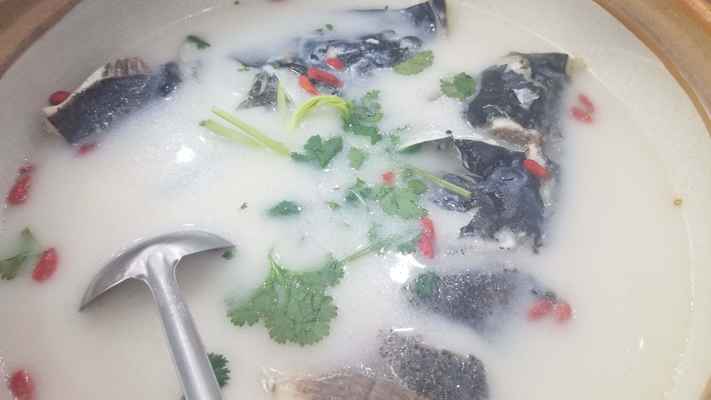
我个人是不太喜欢吃鱼的，不过既然来了千岛湖，一定要体验一下当地的特色，我这张图里看起来鱼只露出一小部分，实际上鱼的大部分都在汤里，鱼个头还是挺大的，肉量也多，但我最喜欢的还是这个汤，味道比较“鲜”，两个人吃估计想吃完够呛，我们四人差不多刚好能吃完，所以我估计这道菜应该是3-4人的量。
其他的菜，小炒肉、土猪肉、石锅豆腐等都还是不错的，但一般餐桌上总有一道菜是多余的，这道菜我没记错的话应该叫玉米片，从知乎上找了一张图，大概是这样。
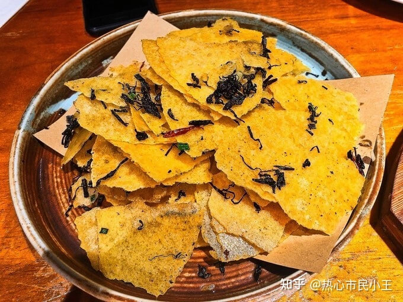
这道菜口感挺脆的，跟薯片有点像，但比薯片还要更脆一点，它的问题就是味道太淡了，没有薯片的命，得了薯片的病。
插曲
吃完晚饭，4人都有点撑，于是决定逛一下，由于鱼宴馆正好就在千岛湖岸边，我们就决定绕千岛湖逛一下。
讲道理，千岛湖的夜景并不好，千岛湖这边政府要求环境保护非常严格，大晚上除了千岛湖岸边上的街道是开灯的，湖中心是根本不开灯的，所以沿着千岛湖夜游啥也看不到……
所以晚上回到民宿前，我们4人都是打屁聊天。唯一的亮点是一个岸边的婚纱照拍摄现场，4人纷纷表达了对未来婚礼的憧憬，可惜天太黑，啥照片也没拍就回去了。
由于第二天我们决定是去东南湖区上岛游玩，考虑到岛上的水和食物等必然贵，我们决定提前去超市买点吃喝，最终买了点八宝粥、果冻、蛋黄派之类的。
5月2日
第二天天气特别好，大晴天，我们预定是去东南湖区坐船上岛，早上大概9点多出门，早餐吃的非常撑，因为中午只是吃点蛋黄派充饥。
从民宿出发到东南湖区大概就10公里的路程，到了那边以后，大概十点左右，在门口买票的人说不上多，一开始我们打算网上买票，结果五月二号的票全部都卖完了，所以只好排队窗口买票。
东南湖区这边上岛主要分两种票，快艇和游艇，价格其实差不了多少，快艇大概是七八个人一起乘坐，而游艇是两层的，大概几十个人一起乘坐，我们坐的是游艇二层，一开始还挺新鲜的，毕竟湖面上吹来的风非常凉快，大家都跑到甲板上吹风拍照，但转船以后明显就没那个新鲜劲了，因为说实话，湖面上确实啥都没有，太阳也比较大。要我说，还是快艇比较有趣，每当附近有快艇乘风破浪驶过，我们几个都会投去羡慕的眼神。
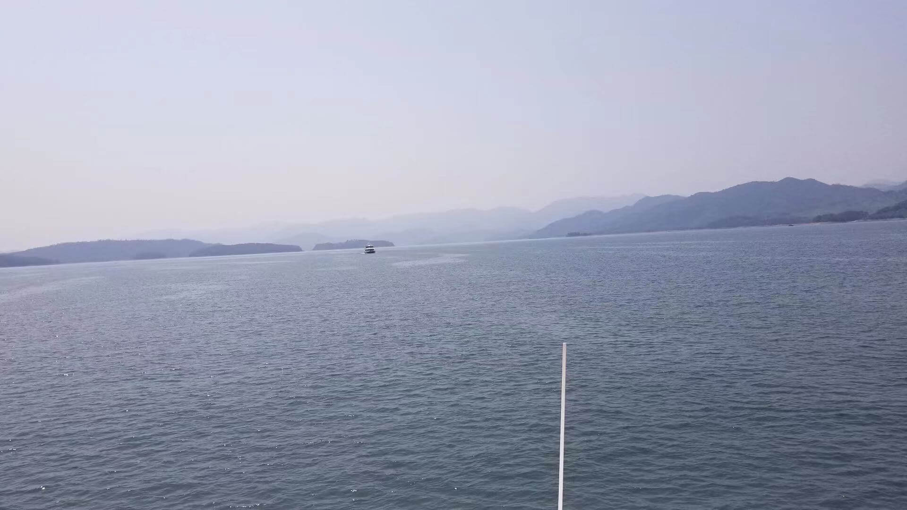
黄山尖
算是糟糕一天的开始吧，因为，黄山尖也是一座山…..上下山都有缆车可以坐，票价大概是二十多一人，还算比较值，不过我们一行人上山是爬上去的。
山脚大概几十米的地方有个小卖部，挺多人在这边休息，我问了一下，一根热狗卖15块钱，瞬间放弃了在这边买东西的想法。
黄山尖和千岛湖森林氧吧作比较的话，爬山体验无疑是黄山尖全方位碾压千岛湖森林氧吧的，因为上山台阶还是相对宽敞的，而且光线也比较足，人工痕迹相比于后者也没有那么令人反感。
黄山尖这边一个看点是，山顶向湖面俯瞰，可以看到几个小岛组成的“公”字，一开始我们在船上时，导游跟我们说是“天下为公”几个大字，但恕我眼拙，只看到一个“公”字。
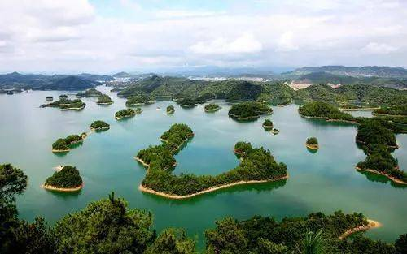
由于前一天爬森林氧吧就有点累了，爬完黄山尖以后，我们几个人都比较累，于是下山的的时候，坐了缆车。
天池岛
我们的游览门票只有两个岛，黄山尖游览完后就是天池岛，这座岛地势相对平坦一些，看点也比黄山尖多。
首先是天池，实际上就是一个小鱼塘，里面有许多大大小小的金鱼，门口有收费的投喂鱼食。这些鱼又肥又胖，很明显就是天天被游客喂出来的……
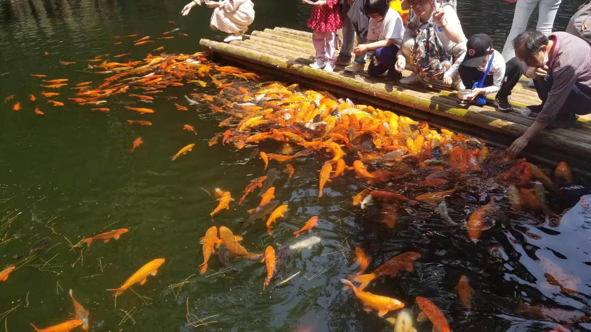
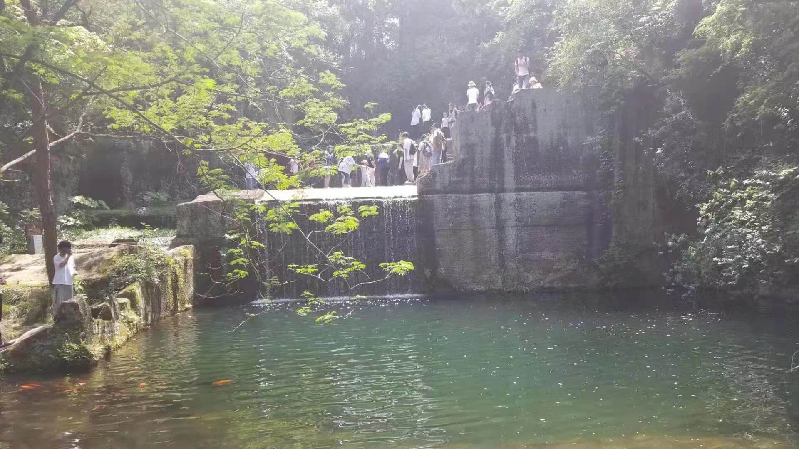
天池岛面积还是比较大的，另一个看点就是鸟岛，顾名思义，这地方主要是看鸟的，可以看到鹦鹉不少鹦鹉、天鹅、火烈鸟，还有一个鹦鹉表演。
出去的路上我们经过一个鸟园，不过门口有告示，由于近期整改升级，鸟园暂时没开放，只在外面看到一只呆滞的鸵鸟，还有个小屁孩拿小块的食物残渣扔它，结果它一点反应也没有，突然就感觉鸟岛的这些鸟真是可怜，被束缚了起来，放弃了挣扎。
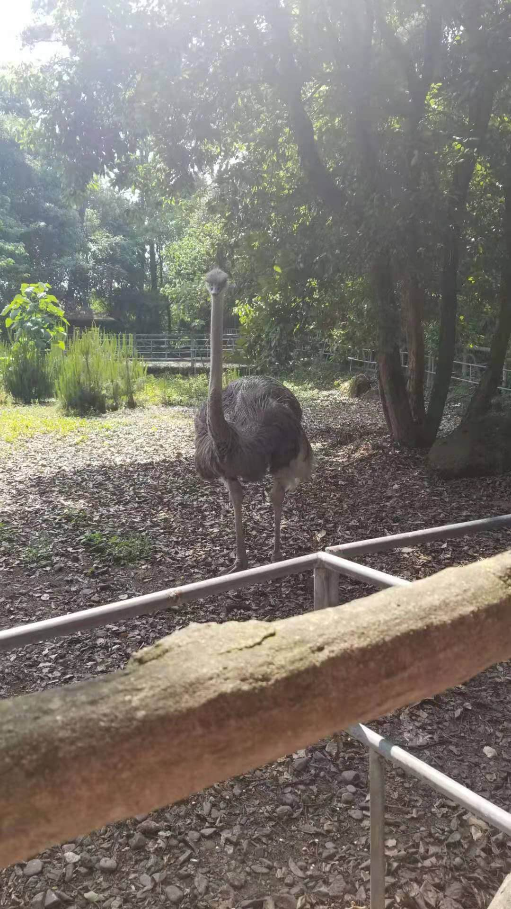
从鸟岛到终点二号码头的路上，还能看到几处不错的风景。
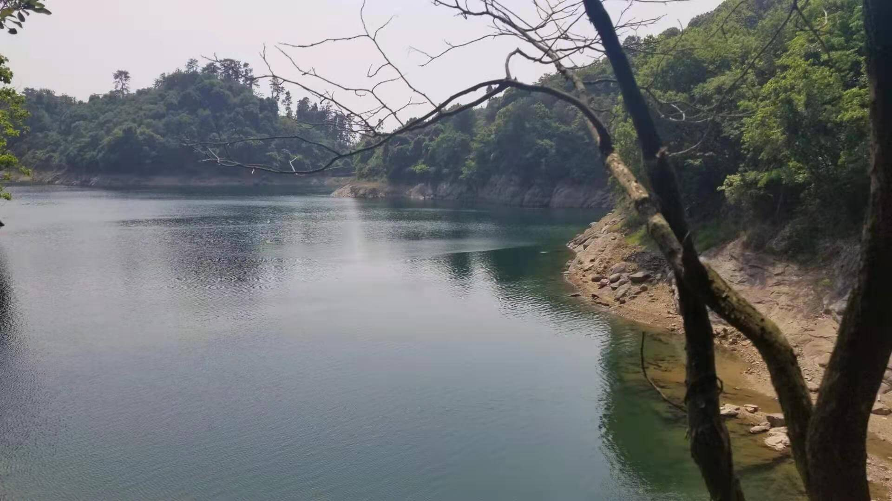
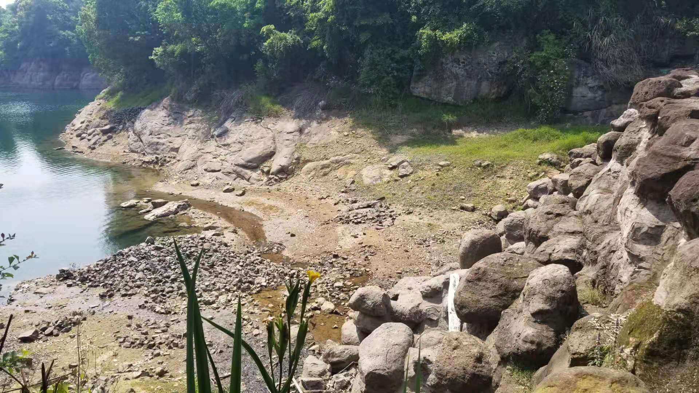
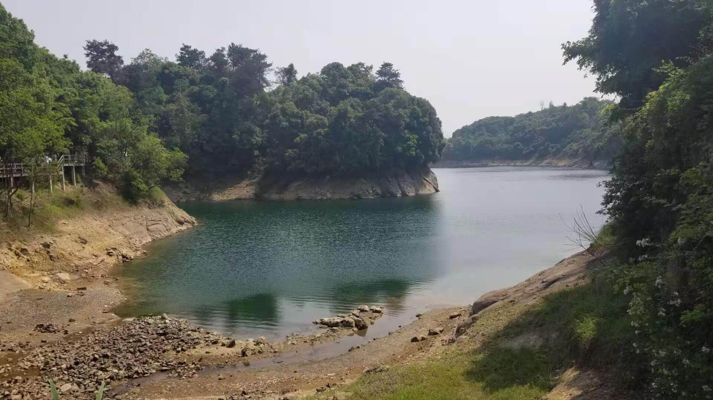
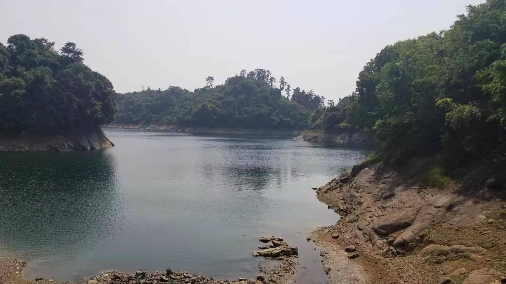
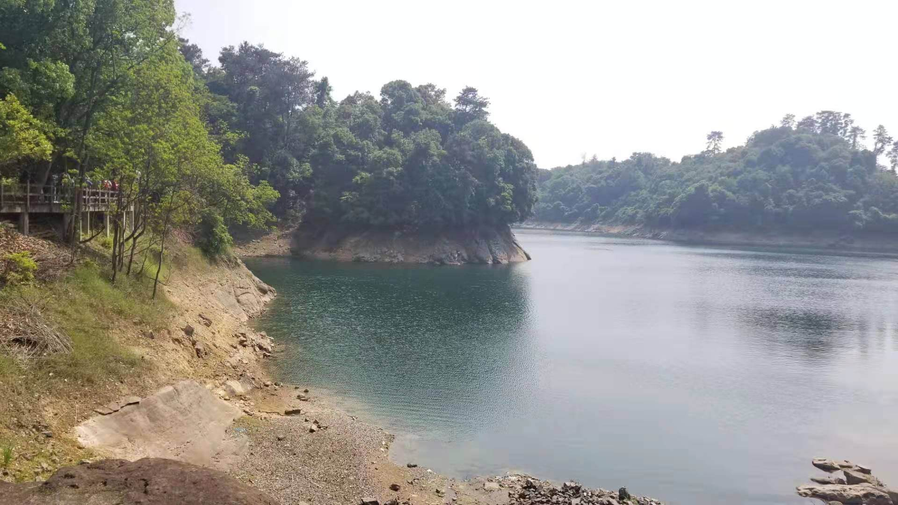
由于黄山尖爬完已经比较累了，导致我们游玩天池岛时，兴致不高，速度非常快地就上船回码头了。
晚上的小插曲
第二天晚上我们是去啤酒小镇吃的，原本是想吃烤羊腿，结果老板跟我们说至少要排队等一个半小时以上，于是我们只好去了一家旁边人少的小餐馆吃了点，仍然是农家菜，跟前一天鱼宴馆的菜品相比，没啥特别的。
原本是想吃完饭去听听啤酒小镇音乐节，结果噪音实在太大，我们忍受不了，就直接回去休息了。
关于我们住的民宿，有一点需要吐槽的地方，就是wifi速度极其感人，无论你是开流量还是连他们的wifi，用网高峰期的速度连个B站的视频都看不了，只有深夜的时候速度稍微快一些。我们只能玩玩带过来的三国杀实体卡牌，不过还是挺欢乐的，两天晚上都是三国杀打发时间，一盘一个小时，时间还是过挺快的。
5月3日
最后一天就是退房，由于是下午四点半的票，我们也没有再去哪个新的景点游览，中午去市区吃了顿韩式烤肉，KTV唱了两个多小时，就坐动车回杭州了。
旅游体感
千岛湖这个地方，我觉得并不适合一个人游览，因为很多景点确实也就那样，不如跟朋友聊天打发时间，如果你没来过的话，还是建议做一下旅游规划。我们这两天的旅游，主要感受就是累，因为都是在爬山、走路。
今后如果还要来千岛湖的话，我应该会尝试一下天宇山观景台、漂流等更有乐趣的项目。
五一假期主要还是调整一下心态，毕业后脑子里一直是工作的事情，根本没有机会放松一下自己的心态，这次几个大学室友一起出去玩，仿佛又回到了毕业前，还是挺开心的。